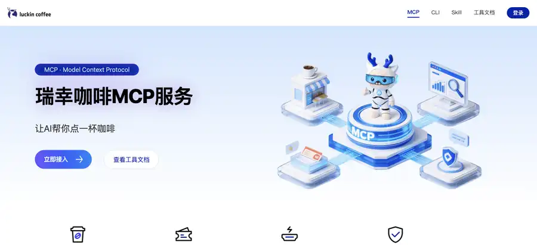
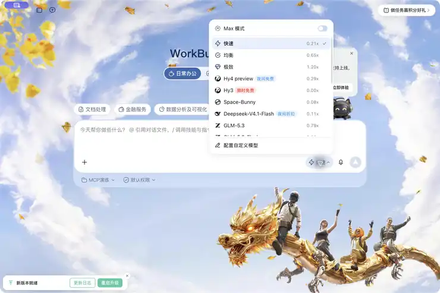
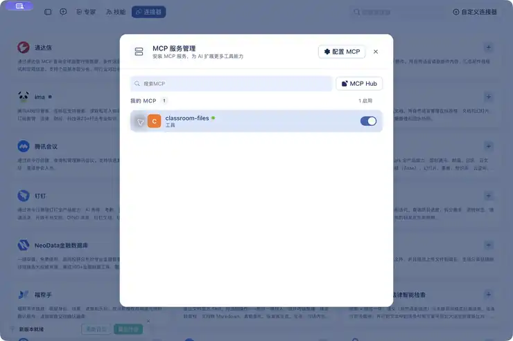
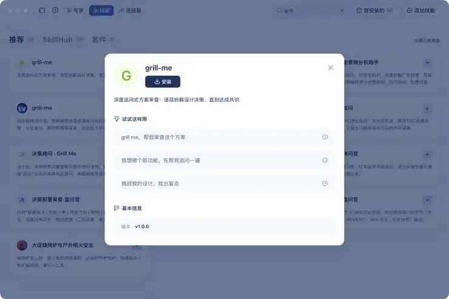

第四章｜AIGC应用与实践 · 第16次课 · 2 学时
连接器与智能体接力：把材料变成可执行的下一步
00 知识回顾
第15次课用知识库检索材料并形成回答。本课用MCP调用软件工具，把“澄清需求后的计划”交给另一个模型执行，将活动材料变成可用成果。
01 任务预告
本课成果： 观看教师把本地活动材料变成准备清单；自己用WorkBuddy的腾讯文档MCP创建一份“奶茶口味偏好调查”收集表。
合格标准： Plan模式配合grilling确认问卷要求；高级模型形成计划，便宜模型按计划执行；六道题的题型与选项正确，填写链接可打开，两份模拟回答能保存。
02 基础概念
1｜MCP：让AI按统一方式调用工具
MCP是模型上下文协议（Model Context Protocol）。AI应用通过它发现工具、传入参数、取得结果。例如本课先调用“列文件”取得文件名，再调用“读文件”取得正文，最后调用“写文件”保存清单。AI负责理解与生成，文件系统MCP服务负责实际读写。
| 本课角色 | 做什么 |
|---|---|
| WorkBuddy | 接收任务、让模型选择工具、展示调用结果 |
| 文件系统MCP服务 | 提供指定文件夹内的读写工具 |
| 课堂文件夹 | 保存两份输入材料与最终清单 |
连接器是软件中的接入入口；有的连接器使用MCP，有的使用其他方式。本课以明确的文件系统MCP工具记录为依据。
2｜MCP的意义：软件能力有了共同接口
过去，AI连接文档、地图或业务系统，常需要各写一套对接方式。MCP把“发现有哪些工具、怎样传入参数、怎样取得结果”统一起来：软件提供MCP服务，兼容的AI应用就能复用这套工具。可把它理解为AI接入软件能力的“通用插口”。
| 谁受益 | 带来的变化 |
|---|---|
| 软件提供方 | 将查询、创建、修改等功能开放为标准工具 |
| AI应用 | 按共同协议接入不同服务，减少逐个适配 |
| 普通使用者 | 用自然语言组合多个软件的操作，减少来回切换 |
瑞幸咖啡已经提供官方MCP服务： AI可以调用查门店、搜商品、订单预览、创建订单等工具。例如“找一家附近的瑞幸，再看看有哪些冰美式”，背后是AI选择工具、瑞幸系统返回门店与商品结果；发起点单还要确认门店、规格和金额，支付由用户完成。本课只观察官方平台，不实际购买。

页面展示瑞幸官方MCP服务与接入、工具文档入口。
越来越多软件正在开放MCP、CLI或Skill能力，MCP正成为AI调用外部工具的通用标准之一。接入取决于软件是否提供服务、AI应用是否兼容以及账号权限；不是所有软件都已经支持MCP。
3｜grilling追问方法：使用WorkBuddy现有grill-me技能
WorkBuddy技能市场中可找到grill-me，说明为“深度追问式方案审查”。本课用它实施grilling追问方法：先区分已知事实与需要决定的事项，把当前能回答的问题集中提出，每题附建议；得到回答后继续补齐依赖条件，直到双方确认任务已经说清楚。本课用它问“多少人、设备缺口如何安排、清单要包含什么”。
Skill指导AI怎么做；MCP给AI实际调用的工具。grilling不能替代读取材料，也不会自动连接文件夹。
4｜模型接力：高级模型规划，便宜模型执行
规划阶段要发现缺项、比较处理方式、确定步骤；执行阶段按已确认的字段与规则整理文件。因此本课先用Plan与较强模型完成规划，再在同一任务中切换低成本模型、退出Plan执行。
交接要带齐： 目标、材料、已确认决策、执行步骤、成果格式与验收标准。换模型后不要重新猜需求。若换到新任务，需要把这份交接内容完整粘贴过去。

模型菜单显示可选档位及消耗倍率。
具体模型、倍率和优惠随版本与账号变化，课堂以当前菜单为准；实际总消耗还取决于上下文长度和调用次数。
03 核心案例
教师示范｜读书分享会：先问清楚，再让便宜模型干活
两份原创课堂模拟材料分别记录活动安排与设备存量。目标是一份内部准备清单；人数缺失、话筒不足时，先确定处理方式，再保存成果。
演示状态： 本页配图仅展示软件开始界面与示例输入；以下追问、计划、MCP执行与成果核验为课堂操作步骤，请按步骤完成课堂操作与成果核验。
步骤1｜整理材料，连接文件系统MCP
在独立课堂文件夹准备两份TXT。WorkBuddy选择同一文件夹作为工作空间；通过“专家·技能·连接器→连接器→自定义连接器”配置文件系统MCP。
活动安排.txt【课堂模拟材料】
活动：读书分享会
时间：10月15日15:00—16:00
地点：图书馆讨论室（拟用，未预约）
人数：尚未统计
每位参加者带一本书，分享一分钟。
设备清单.txt【课堂模拟材料】
计划需要：投影仪1台、话筒2支。
现有可借：投影仪1台、话筒1支。
设备尚未办理借用。

MCP服务管理中已添加classroom-files；此界面仅证明配置入口，不证明工具调用成功。
Windows课堂配置参考： 教师先在电脑创建 C:/AIGC16，安装可用的Node.js，再在MCP配置中添加下列服务；已有服务须保留。首次启动需联网下载官方包。
{
"mcpServers": {
"classroom-files": {
"command": "cmd",
"args": ["/c", "npx", "-y", "@modelcontextprotocol/server-filesystem", "C:/AIGC16"]
}
}
}
实际开始前调用 list_allowed_directories，核对范围指向课堂目录；客户端若提供Roots，最终范围可能改变，应以该工具结果为准。Windows配置依据官方用法整理，在Windows环境下使用对应系统路径即可。
技能准备： 打开“专家·技能·连接器→技能”，搜索 grill，选择grill-me；尚未安装时在技能卡中安装，再到“我安装的”确认已启用。课堂直接调用现有技能，无需复制技能文件。

技能详情显示名称、追问用途和调用示例。
开始条件： 文件系统MCP已连接，grill-me技能已启用，账号可选择规划与执行两档模型。首次使用需要Node.js/npx环境和联网取得官方服务包；本课使用教师预先配置的课堂电脑，不要求学生编写程序。
步骤2｜Plan＋grilling＋高级模型，先追问
选择高级模型（开始界面示例使用“极致”），从“更多操作→模式”打开Plan，再输入：
使用WorkBuddy已启用的grill-me技能（grilling追问方法）澄清活动准备任务，当前只规划，暂不生成成果文件。
先用classroom-files文件系统MCP检查允许目录、列出本文件夹，读取活动安排.txt和设备清单.txt。材料读取必须使用MCP工具。
目标是一份简短活动准备清单，包含活动信息、设备缺口、三条待办。
材料未提供的事实标出来；需要我决定的事项集中提问，每题给一个建议。
得到我的回答并确认需求完整后，再形成计划，注明每步的工具、输入、输出与验收标准。
输入区显示“计划”和“极致”，任务要求先追问再形成计划。
步骤3｜审查计划，补齐决定
教师回答：“预计20人；缺的1支话筒列入待办，不写成已借到；清单用于内部筹备，不发通知。”如果AI继续问格式，回答“简短TXT，三条待办，姓名用岗位称呼”。需求对齐后明确确认，让高级模型输出最终计划。
计划应包含： 读取两份材料→整合活动字段→计算话筒缺口→生成三条待办→MCP写文件→MCP回读核验。先前的“拟用场地”和“可借设备”应保持待办理状态。
步骤4｜切换便宜模型，退出Plan执行
在同一个任务中切换低成本模型（开始界面示例使用“快速”），关闭Plan；把已确认的目标、人数与处理规则一起交接：
按上面已确认的计划执行。预计20人；话筒需要2支、现有可借1支，缺1支，列为待办理；场地和设备均未预约或借用完成。
只使用classroom-files文件系统MCP重新读取两份材料，然后生成“16_读书分享会准备清单_教师示例.txt”。
清单包含活动信息、材料依据、设备缺口、三条待办；末尾简记规划模型、执行模型和实际用到的MCP工具。
使用write_file保存，再用read_text_file回读，核对时间、地点、20人和话筒缺1支。
如果工具报错，报告实际错误；不要用命令行或内置文件工具替代MCP后声称MCP完成。
步骤5｜回读成果，复盘两处错误
从文件夹打开清单，对照MCP回读正文：20人来自本轮补充；话筒缺口是2−1＝1；场地与设备仍未办理。再看模型记录，说明规划与执行由哪两个模型完成。
| 执行时可能出现的问题 | 修正动作 |
|---|---|
| 调用了内置“读取文件”，却称为MCP | 指定classroom-files并展开实际MCP调用卡 |
| 执行模型把“现有可借”改成“已经借到” | 将办理状态写进交接说明，重新生成并回读 |
参考： WorkBuddy蓝皮书·连接器、官方任务栏与Plan说明、官方技能说明、官方积分说明、文件系统MCP官方实现。
04 实践任务｜用腾讯文档MCP创建奶茶口味调查问卷
你的任务： 2人合作，通过WorkBuddy的腾讯文档MCP创建“奶茶口味偏好调查”收集表。问卷用于了解口味、甜度、冰量和价格偏好；完成两份模拟试填，最终只交一个填写链接。本任务不需配置文件系统服务或安装Node.js。
开始条件： WorkBuddy已连接本人腾讯文档账号，grill-me已启用，网络可用。首次连接由本人在“连接器→腾讯文档”查看授权范围后完成登录；授权涉及账号中的文档读取与管理，不使用存有敏感资料的账号。基础任务用当前可用模型完成，不要求购买套餐。
第1步｜整理材料（5分钟）
打开“专家·技能·连接器→连接器”，搜索腾讯文档。连接后将以下原创任务材料粘贴到新任务；只收集偏好，不设置姓名、手机号或学号字段。
【课堂模拟任务：奶茶口味偏好调查】
用途：练习用AI创建腾讯文档收集表，不代表真实店铺调研。
对象：本组两人，分别提交一份模拟回答，不面向全班公开发放。
标题：16_奶茶口味调查_组号（执行前替换组号）
说明：匿名课堂练习，约1分钟；请选择自己的偏好，不收集个人身份信息。
1. 你平均每周喝几次奶茶？【单选，必答】
0次 / 1—2次 / 3—4次 / 5次及以上
2. 你喜欢哪些奶茶口味？【多选，必答】
原味 / 芋泥 / 抹茶 / 黑糖 / 水果 / 其他
3. 你通常选择哪种甜度？【单选，必答】
无糖 / 三分糖 / 五分糖 / 七分糖 / 全糖
4. 你通常选择哪种冰量或温度？【单选，必答】
正常冰 / 少冰 / 去冰 / 常温 / 热饮
5. 一杯奶茶你通常接受的价格是多少？【单选，必答】
10元以下 / 10元至不足15元 / 15元至不足20元 / 20元及以上
6. 还有什么想尝试的口味？【简答，选答】
可以填写一种新口味，也可以留空。
成果：一份能填写、能保存回答的腾讯文档收集表及其填写链接。
在连接器卡中找到腾讯文档；本图只展示开始入口，不展示已创建的问卷。
检查点： 六题围绕奶茶偏好；第2题是多选，第6题可留空；价格选项没有交叉区间。
第2步｜先出计划（7分钟）
选择较强模型，打开Plan，调用grill-me：
使用WorkBuddy已启用的grill-me技能，先澄清再规划。
根据上面的课堂模拟任务，我要通过腾讯文档MCP创建“奶茶口味偏好调查”收集表。
先问清组号、题型与必答设置、试填范围，每题给一个适合初学者的建议。
我确认后再给执行计划：检查腾讯文档实际提供的工具、创建六题收集表、读取核对题目、取得填写链接、预览并提交两份模拟回答、检查记录数。
当前只规划，不创建收集表，也不发送链接。确认工具能创建收集表，而不是仅创建普通文档。
检查点： 计划明确收集表、单选/多选/简答和填写链接；只在聊天框列出六道题，还没有完成创建。
第3步｜审查计划（5分钟）
回答：“组号用自己的组号；按材料保留六题，第1—5题必答，第6题选答；只给本组两人试填，暂不公开发放。”继续回答必要追问，再确认计划。
交接内容： 标题、六题全文、题型与必答规则、两份模拟试填、一个填写链接。确认没有新增姓名等身份字段，问题不出现“最受欢迎”“一定更好喝”等诱导表述。两份测试回答只用于检查功能，不能据此得出市场结论。
第4步｜生成草稿（10分钟）
同一任务切换便宜模型、退出Plan，替换组号后执行：
执行刚才确认的计划，通过腾讯文档MCP创建收集表，标题为“16_奶茶口味调查_组号”。
题目、选项和说明使用上面的任务材料：第1、3、4、5题单选，第2题多选，第6题简答；前五题必答，第六题选答。不要收集姓名、手机号、学号。
先检查当前腾讯文档工具是否支持创建收集表及这些题型，再用实际提供的工具创建。记录真实工具名称，不编造工具名或链接。
创建后用腾讯文档工具读取或核对题目与设置，返回收集表标识、管理入口和填写链接，并清楚标注用途；最终交付使用填写链接。
不要代填回答，不发送给全班，不更改账号中其他文档。
若题型或收集表创建不受支持，报告具体缺少的能力；不要拿普通在线文档或本地题目清单冒充问卷。
检查点： 展开腾讯文档MCP实际调用记录；从管理入口看到六题收集表，从填写链接看到可选择的题目。标题、题型、选项和必答标记与材料一致。
第5步｜核对保存（8分钟）
先在预览中测试：第2题能同时选两种口味，第6题留空不影响提交，必答题漏答会提示补齐。再取得收集表的填写链接，仅交给本组同伴试填；不把编辑或管理链接当成填写链接。
两份模拟试填： 第一份选择“1—2次、原味＋芋泥、五分糖、少冰、10元至不足15元”，第6题留空；第二份选择“0次、抹茶＋水果、无糖、热饮、15元至不足20元”，第6题填写“桂花味”。在结果页查看两条记录，核对多选和简答保存正确；这两条均为测试数据。
最终交付： 一份标题为 16_奶茶口味调查_组号 的腾讯文档收集表填写链接。教师能打开题目，小组在管理端能看到两条模拟测试记录；无需另交TXT、Word或截图。
遇到困难： 问卷找不到时核对腾讯文档账号与返回的收集表标识；填写者权限不足时由所有者检查收集表的填写设置。连接失败可与已连接同学合作。若当前工具只能创建普通文档，保留题目草稿并请教师协助确认可用的收集表工具；手工建表要如实记录，不能算作MCP创建完成。题型与设置核对、创建、填写与结果保存需在课堂实操中逐项完成。
任务参考： 根据WorkBuddy官方“实践十一：一句话，管理你的腾讯文档”中的收集表创建案例做教学改编；腾讯文档连接说明。本任务使用腾讯文档收集表，操作前以当前连接器实际开放的工具为准。
05 本课总结
| 成果自查 | 合格表现 |
|---|---|
| 标准接口 | 能用文件系统与瑞幸例子解释MCP如何开放软件能力 |
| 需求澄清 | 用grill-me确认六题、题型、必答规则和试填范围 |
| 模型接力 | 高级模型规划，便宜模型按已确认计划执行 |
| MCP创建与核对 | 有腾讯文档MCP调用记录，真实收集表与六题内容一致 |
| 问卷可用 | 多选可选多项，选答可留空，价格区间不重叠 |
| 最终成果 | 提交填写链接，管理端保存两条模拟试填记录 |
下节预告： 第17次课将同一事实底稿转成图文卡和30秒短视频分镜脚本。